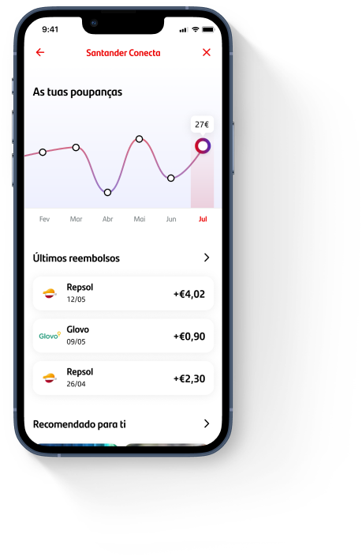
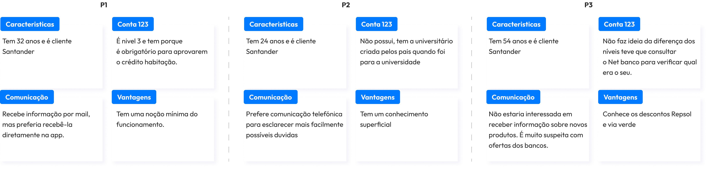

Posicionar uma marca nunca é algo fácil, muito menos um banco que é sempre algo sério e burocrático, onde as vantagens nem sempre agradam a todos os clientes.
Este projeto tem como objetivo mudar essa imagem, um programa feito para o Santander onde todas as vantagens são 100% costumizadas consoante o cliente.
Este projeto faz parte do programa de ensino EDIT. - Disruptive Digital Education e durou de 22 de junho até 24 de julho de 2022.
Fiz parte de uma equipa de nove pessoas, onde colaborei com profissionais de marketing, designers entreoutras.
Fiquei responsável pela pesquisa, estratégia de conteúdo e prototipagem.
Este estudo mostra apenas a minha parte do projeto, estratégia de campanha, criação de logotipo e processos do género não fazem parte do estudo.
Santander, em parceria com a Data 4 Deals, pretende lançar um Marketplace para oferecer mais vantagens e descontos costumizados para cada cliente.
O objetivo principal é deixar a imagem do banco diretamente associada às recompensas mantendo uma abordagem próxima, simples e justa.
Realizámos três entrevistas one-on-one, com o objetivo de entender como os Clientes Santander vêem o seu banco.
Algumas perguntas como:
Concluímos que os clientes não usufruem de todas as vantangens que uma conta Santander oferece e alguns nem sabiam as vantagem que tinham.
*Confirmámos que as pessoas normalmente escolhem o banco por influência familiar ou fase da vida (se estão na faculdade, se precisam de um empréstimo para uma casa, etc.)
Em simultâneo com as entrevistas aos clientes Santander, uma colega consultou um gerente do banco que esclareceu algumas dúvidas por parte do negócio, relacionadas com a percepção do funcionário ao vender os serviços do banco.
P: Em que momento é oferecida a opção de conta Mundo 123?
P: Quais as dificuldades/objeções na divulgação deste produto para os clientes?
"Só há neste momento a opção de abertura de conta 123. É oferecido sempre quando o cliente vai ao banco."
"Principalmente o cartão de crédito."
Após as entrevista lançámos um questionário online com 11 perguntas que enviámos a contactos com contas bancárias em Portugal, obtivemos um total de 198 respostas